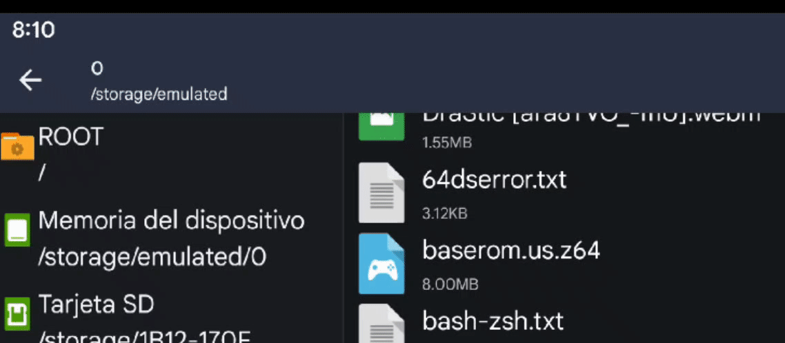

Configurar Termux
Descarga el archivo APK de F-Droid desde aquí e instálalo.
Abre Termux y escribe:
yes|pkg update && yes|pkg upgrade
termux-setup-storage
Instalar dependencias
Escribe el siguiente comando:
pkg remove libglvnd
pkg install git wget make python getconf zip apksigner clang binutils libglvnd-dev aapt which
git clone --recursive https://github.com/ManIsCat2/sm64coopdx.git
¡Atención! Si bien la ROM ya no es necesaria para extraer ningún activo con derechos de autor, todavía es necesaria para la parte de audio de la compilación. Obtén tu archivo ROM en formato Z64 de 8 MB de Super Mario 64 estadounidense y cámbiale el nombre baserom.us.z64 antes de colocarlo en la raíz de tu teléfono (almacenamiento interno)..

cp /storage/emulated/0/baserom.us.z64 sm64coopdx/baserom.us.z64 && cd sm64coopdx
make -j$(nproc)
cp build/us_pc/sm64coopdx.apk /storage/emulated/0